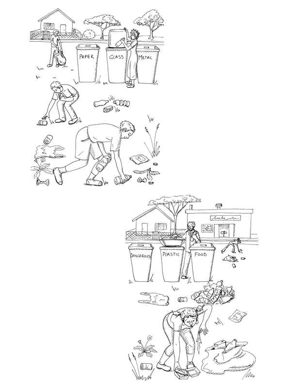
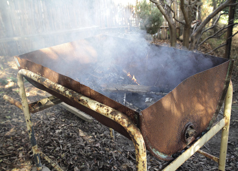
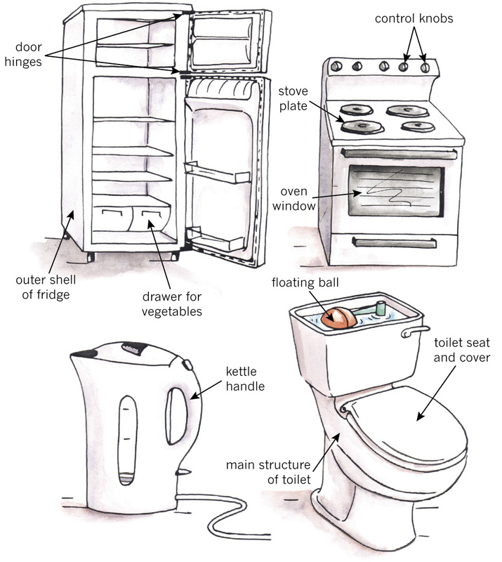
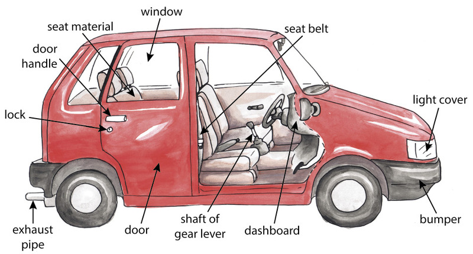
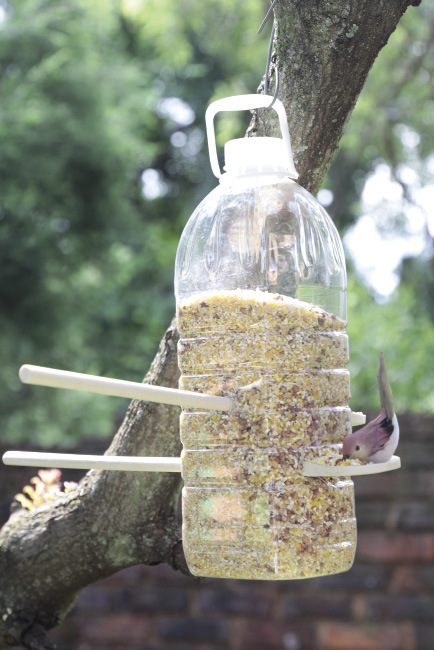
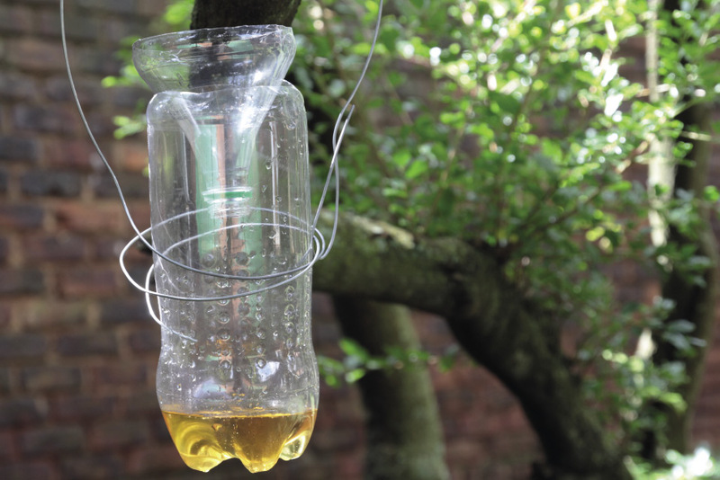
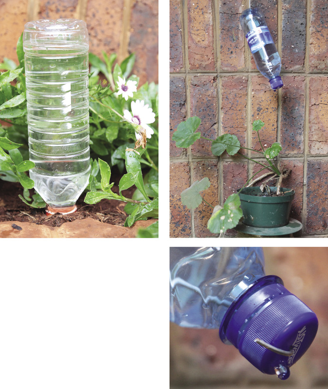
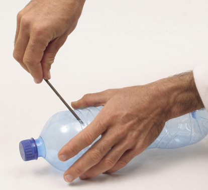
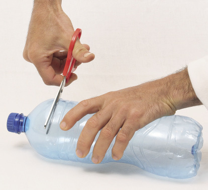
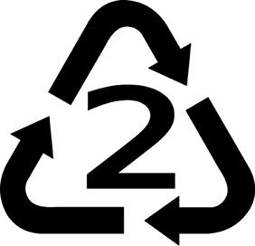

<div class="container">
  <div id="contents" class="col-md-12 main-content"><h1 xmlns="http://www.w3.org/1999/xhtml" id="toc-id-17">Mini-pat: reduce, re-use and recycle - working with plastics</h1>

     <p xmlns="http://www.w3.org/1999/xhtml" class="x--Body-opener">In this Mini-PAT you will design and
    make a useful new product from old plastic bottles. But first
    you will look at how plastic is used in everyday life.</p>

    <p xmlns="http://www.w3.org/1999/xhtml" class="x--Body-opener">You will <b>only do individual work</b> in this
    Mini-PAT.</p>

      <figure xmlns="http://www.w3.org/1999/xhtml">

    <figcaption>Figure 1: Improving your environment by picking up and sorting waste</figcaption>
    </figure>

    <p xmlns="http://www.w3.org/1999/xhtml" class="x--Body-opener para-style-override-30"><b>Reduce, re-use, recycle</b></p>

    <p xmlns="http://www.w3.org/1999/xhtml" class="x--Body-opener">In Grade 8 Term 4, you learnt that
    the environment is damaged when more and more things are made
    and thrown away. You learnt that waste is formed in order to
    make new products, and that the products themselves become
    waste when they are thrown away. You can reduce the negative
    impact of this practice on the environment in different
    ways.</p>

    <p xmlns="http://www.w3.org/1999/xhtml" class="x--Body-opener">Firstly, you can buy fewer things,
    which is called reducing your consumption.</p>

    <p xmlns="http://www.w3.org/1999/xhtml" class="x--Body-opener--1-3- para-style-override-35">
    Secondly, you can use some things over and over, so that you
    don't have to buy new things. This is called re-using things.
    You can also re-use something for a different purpose than it
    was originally made for. For example, many people use old
    hot-water tanks (geysers) to make "braai-skottels" in which
    they can make fire and barbeque food outside.</p>

    <figure xmlns="http://www.w3.org/1999/xhtml">


<figcaption>Figure 2: A "braai-skottel" made from an oil tank cut through the middle </figcaption>
</figure>

    <p xmlns="http://www.w3.org/1999/xhtml" class="x--Body-opener--1-3- para-style-override-35">But what
    if something you own gets broken or you don't have any use for
    it anymore? Then you have to throw it away. Fortunately, there
    is a clever way of throwing things away, by separating the
    different types of waste.</p>

    <p xmlns="http://www.w3.org/1999/xhtml" class="x--Body-opener--1-3-">For example, if you and your
    family collect all your plastic waste separately, then someone
    can take that plastic to a recycling factory where new plastic
    is made from the old plastic. At a recycling factory, the old
    plastic is washed and shredded into very small pieces.</p>

    <p xmlns="http://www.w3.org/1999/xhtml" class="x--Body-opener">It is then melted and "moulded" in
    the shape of "pellets". The pellets can then be used as the raw
    material to make new plastic products.</p>

    <div xmlns="http://www.w3.org/1999/xhtml" class="aside">
      <p class="x--Body-box-no-indent">You learnt in the previous
      chapter how plastic pellets are moulded into new shapes.</p>
    </div>

    <h2 xmlns="http://www.w3.org/1999/xhtml" class="x--T-Heading-chapter" id="toc-id-18">Week 1</h2>

    <p xmlns="http://www.w3.org/1999/xhtml" class="x--Body-Text">Plastics are easy to form into
    complicated shapes, do not corrode, have high electrical
    resistance, are tough and can be made in many colours.</p>

    <h3 xmlns="http://www.w3.org/1999/xhtml" class="x--Head-investigation para-style-override-43">Plastics in the classroom and at home (60 minutes)</h3>

    <p xmlns="http://www.w3.org/1999/xhtml" class="x--Body-investigation-hanging para-style-override-5">
    1. Look around you on your desk, at your clothes and in your
    school bag. Make a list of all the things you can see that are
    made of plastic. Also write down whether it is made of hard or
    soft plastic and thick or thin plastic.</p>

    <table xmlns="http://www.w3.org/1999/xhtml" id="table-11" class="No-Table-Style"><tbody><tr class="Row-Column-13"><td class="cell-style-override-1">
            <p class="x--Body-Text para-style-override-6"><b>Plastic         item</b></p>
          </td>

          <td class="cell-style-override-1">
            <p class="x--Body-Text para-style-override-6"><b>Hard or         soft</b></p>
          </td>

          <td class="cell-style-override-1">
            <p class="x--Body-Text para-style-override-6"><b>Thick,         thin, or woven</b></p>
          </td>
        </tr><tr class="Row-Column-13"><td class="cell-style-override-1">
            
          </td>

          <td class="cell-style-override-1">
            
          </td>

          <td class="cell-style-override-1">
            
          </td>
        </tr><tr class="Row-Column-13"><td class="cell-style-override-1">
            
          </td>

          <td class="cell-style-override-1">
            
          </td>

          <td class="cell-style-override-1">
            
          </td>
        </tr><tr class="Row-Column-13"><td class="cell-style-override-1">
            
          </td>

          <td class="cell-style-override-1">
            
          </td>

          <td class="cell-style-override-1">
            
          </td>
        </tr><tr class="Row-Column-13"><td class="cell-style-override-1">
            
          </td>

          <td class="cell-style-override-1">
            
          </td>

          <td class="cell-style-override-1">
            
          </td>
        </tr><tr class="Row-Column-13"><td class="cell-style-override-1">
            
          </td>

          <td class="cell-style-override-1">
            
          </td>

          <td class="cell-style-override-1">
            
          </td>
        </tr></tbody></table><p xmlns="http://www.w3.org/1999/xhtml" class="x--Body-investigation-hanging para-style-override-31">2. The
    table below lists different things that you can see in a house.
    Write "yes" or "no" next to each item to show whether it is
    made of plastic or not.</p>

    <table xmlns="http://www.w3.org/1999/xhtml" id="table-12" class="No-Table-Style"><tbody><tr class="Row-Column-13"><td class="cell-style-override-1">
            <p class="x--Body-Text">floor tiles</p>
          </td>

          <td class="cell-style-override-1">
            
          </td>
        </tr><tr class="Row-Column-13"><td class="cell-style-override-1">
            <p class="x--Body-Text">roof plates</p>
          </td>

          <td class="cell-style-override-1">
            
          </td>
        </tr><tr class="Row-Column-13"><td class="cell-style-override-1">
            <p class="x--Body-Text">cushions</p>
          </td>

          <td class="cell-style-override-1">
            
          </td>
        </tr><tr class="Row-Column-13"><td class="cell-style-override-1">
            <p class="x--Body-Text">windows</p>
          </td>

          <td class="cell-style-override-1">
            
          </td>
        </tr><tr class="Row-Column-13"><td class="cell-style-override-1">
            <p class="x--Body-Text">window frames</p>
          </td>

          <td class="cell-style-override-1">
            
          </td>
        </tr><tr class="Row-Column-13"><td class="cell-style-override-1">
            <p class="x--Body-Text">paint</p>
          </td>

          <td class="cell-style-override-1">
            
          </td>
        </tr><tr class="Row-Column-13"><td class="cell-style-override-1">
            <p class="x--Body-Text">chair backs</p>
          </td>

          <td class="cell-style-override-1">
            
          </td>
        </tr><tr class="Row-Column-13"><td class="cell-style-override-1">
            <p class="x--Body-Text">lights</p>
          </td>

          <td class="cell-style-override-1">
            
          </td>
        </tr><tr class="Row-Column-13"><td class="cell-style-override-1">
            <p class="x--Body-Text">bottles for washing soap</p>
          </td>

          <td class="cell-style-override-1">
            
          </td>
        </tr><tr class="Row-Column-13"><td class="cell-style-override-1">
            <p class="x--Body-Text">sponges</p>
          </td>

          <td class="cell-style-override-1">
            
          </td>
        </tr><tr class="Row-Column-13"><td class="cell-style-override-1">
            <p class="x--Body-Text">the outside of a TV or
            radio</p>
          </td>

          <td class="cell-style-override-1">
            
          </td>
        </tr></tbody></table><hr xmlns="http://www.w3.org/1999/xhtml"/><p xmlns="http://www.w3.org/1999/xhtml" class="x--Body-investigation-hanging">3. Look at the
    illustrations of household appliances below. The arrows point
    to different parts of the appliances, and labels are given to
    describe the different parts of the appliances. Write a "P"
    below each label for a part that is made from plastic.</p>

    <figure xmlns="http://www.w3.org/1999/xhtml">


<figcaption> 3: Different parts of typical household appliances </figcaption>
</figure>

    <p xmlns="http://www.w3.org/1999/xhtml" class="x--Body-investigation-hanging">4. A long time ago,
    cars were heavy because most of their parts were made of steel,
    cast iron and even wood. Nowadays, cars are much lighter, and
    therefore they use less petrol to travel each kilometre. One
    way that was used to make cars lighter is to use more plastic
    when building them, instead of using metal.</p>

    <p xmlns="http://www.w3.org/1999/xhtml" class="x--Body-investigation-hanging">Look at the
    illustrations of the inside and outside of a car below. The
    arrows point to different parts, and labels are given to
    describe these different parts. Write a "P" below each label
    for a part that is made from plastic.</p>

   <figure xmlns="http://www.w3.org/1999/xhtml">


<figcaption>Figure 4: Different parts of a motor car</figcaption>
</figure>

    <p xmlns="http://www.w3.org/1999/xhtml" class="x--Body-investigation-hanging">5. How can you test
    whether a material is plastic or metal? Hints: Think about
    hardness, strength, magnetism, sound, heat and fire.</p>
    <hr xmlns="http://www.w3.org/1999/xhtml"/><div xmlns="http://www.w3.org/1999/xhtml" class="aside">
      <p class="x--Body-box-heading"><b>Safety warning:</b></p>

      <p class="x--Body-box-no-indent">Burning plastic can start a
      fire and release poisonous gases. Molten plastic can cause
      serious burn wounds.</p>
    </div>
    <hr xmlns="http://www.w3.org/1999/xhtml"/>

    <h3 xmlns="http://www.w3.org/1999/xhtml" class="x--Head-investigation para-style-override-45">Different scenarios for reusing plastic bottles (30 minutes)</h3>

    <p xmlns="http://www.w3.org/1999/xhtml" class="x--Body-Text">On the following pages, you are shown
    photos of four scenarios in which new products were made from
    old plastic bottles.</p>

    <p xmlns="http://www.w3.org/1999/xhtml" class="x--Body-indent">Each of the products solves a certain
    problem. In other words, it satisfies or addresses a certain
    need. Answer the questions for each scenario about the problem
    or need. Then choose one of these scenarios for the product
    that you will design and make.</p>

    <h4 xmlns="http://www.w3.org/1999/xhtml" class="x--Head-C">Scenario A</h4>

    <figure xmlns="http://www.w3.org/1999/xhtml">


<figcaption>Figure 5</figcaption>
</figure>

    <p xmlns="http://www.w3.org/1999/xhtml" class="x--Body-investigation-hanging">1. What is the purpose
    of the product? (½)</p>
    <hr xmlns="http://www.w3.org/1999/xhtml"/><p xmlns="http://www.w3.org/1999/xhtml" class="x--Body-investigation-hanging">2. How does this
    reduce the amount of work that somebody has to
    do? (½)</p>
    <hr xmlns="http://www.w3.org/1999/xhtml"/><h4 xmlns="http://www.w3.org/1999/xhtml" class="x--Head-C">Scenario B</h4>

   <figure xmlns="http://www.w3.org/1999/xhtml">


<figcaption>Figure 6</figcaption>
</figure>

    <p xmlns="http://www.w3.org/1999/xhtml" class="x--Body-investigation-hanging">3. What is the purpose
    of the product? (½)</p>
    <hr xmlns="http://www.w3.org/1999/xhtml"/><p xmlns="http://www.w3.org/1999/xhtml" class="x--Body-investigation-hanging">4. Can this product
    save you money? How? (½)</p>
    <hr xmlns="http://www.w3.org/1999/xhtml"/><h4 xmlns="http://www.w3.org/1999/xhtml" class="x--Head-C">Scenario C</h4>

   <figure xmlns="http://www.w3.org/1999/xhtml">


<figcaption>Figure 7</figcaption>
</figure>

    <p xmlns="http://www.w3.org/1999/xhtml" class="x--Body-investigation-hanging">5. What is the purpose
    of the product? (½)</p>
    <hr xmlns="http://www.w3.org/1999/xhtml"/><p xmlns="http://www.w3.org/1999/xhtml" class="x--Body-investigation-hanging">6. Can this product
    save you money or time? How? (½)</p>
    <hr xmlns="http://www.w3.org/1999/xhtml"/><h4 xmlns="http://www.w3.org/1999/xhtml" class="x--Head-C">Scenario D</h4>

   <figure xmlns="http://www.w3.org/1999/xhtml">


<figcaption>Figure 8</figcaption>
</figure>

    <p xmlns="http://www.w3.org/1999/xhtml" class="x--Body-investigation-hanging">7. What is the purpose
    of these products? (½)</p>
    <hr xmlns="http://www.w3.org/1999/xhtml"/><p xmlns="http://www.w3.org/1999/xhtml" class="x--Body-investigation-hanging">8. Can this product
    save you money or time? How? (½)</p>
    <hr xmlns="http://www.w3.org/1999/xhtml"/><p xmlns="http://www.w3.org/1999/xhtml" class="x--Body-Text para-style-override-41">Total [4]</p>


    <h3 xmlns="http://www.w3.org/1999/xhtml" class="x--Head-investigation para-style-override-45">Design brief for the scenario that you chose (30 minutes)</h3>

    <p xmlns="http://www.w3.org/1999/xhtml" class="x--Body-Text">Answer the following questions to
    identify the specifications and constraints for the scenario
    that you chose.</p>

    <p xmlns="http://www.w3.org/1999/xhtml" class="x--Body-investigation-hanging">1. Give a description
    of the product you are going to make. (1)</p>
    <hr xmlns="http://www.w3.org/1999/xhtml"/><p xmlns="http://www.w3.org/1999/xhtml" class="x--Body-investigation-hanging">2. Answer the
    following questions to identify the <span class="char-style-override-12"><i>specifications</i></span> for your
    design:</p>

    <p xmlns="http://www.w3.org/1999/xhtml" class="x--Body-investigation-hanging-a-">(a) What is the
    purpose of your product? (½)</p>
    <hr xmlns="http://www.w3.org/1999/xhtml"/><p xmlns="http://www.w3.org/1999/xhtml" class="x--Body-investigation-hanging-a-">(b) Should your
    product keep some things inside (contain it) and keep other
    thing out? What should it keep in and what should it keep
    out? (½)</p>
    <hr xmlns="http://www.w3.org/1999/xhtml"/><p xmlns="http://www.w3.org/1999/xhtml" class="x--Body-investigation-hanging-a-">(c) Should your
    product be supported in some way to stay upright?
    How? (½)</p>

    <p xmlns="http://www.w3.org/1999/xhtml" class="x--Body-investigation-hanging">3. Answer the
    following questions to identify the <span class="char-style-override-12"><i>constraints</i></span> of your design:</p>

    <p xmlns="http://www.w3.org/1999/xhtml" class="x--Body-investigation-hanging-a-">(a) Make a list of
    all the materials you will need. (½)</p>
    <hr xmlns="http://www.w3.org/1999/xhtml"/><p xmlns="http://www.w3.org/1999/xhtml" class="x--Body-investigation-hanging-a-">(b) Make a list of
    all the tools that you will need. (½)</p>
    <hr xmlns="http://www.w3.org/1999/xhtml"/><p xmlns="http://www.w3.org/1999/xhtml" class="x--Body-investigation-hanging-a-">(c) Make a time
    schedule showing how much time you have to design and make the
    product. (½)</p>

    <p xmlns="http://www.w3.org/1999/xhtml" class="x--Body-Text para-style-override-41">Total [4]</p>

    <h2 xmlns="http://www.w3.org/1999/xhtml" class="x--T-Heading-chapter" id="toc-id-19">Week 2</h2>

    <h3 xmlns="http://www.w3.org/1999/xhtml">Initial rough design sketches (30 minutes)</h3>

    <p xmlns="http://www.w3.org/1999/xhtml" class="x--Body-text-1-3">Make rough sketches of your design
    ideas for the product that you want to make. You can make
    sketches for different ideas and later decide which one you are
    going to make.</p>

    <p xmlns="http://www.w3.org/1999/xhtml" class="x--Body-indent-1-3">Try to design and make a product
    that is slightly different from the photos of the products on
    the previous pages, to address the need. In other words, try to
    make an <b>innovative</b>
    design.</p>

    <div xmlns="http://www.w3.org/1999/xhtml" class="aside">
      <p class="x--Body-box-no-indent">The word <b>innovative</b> comes from the word
      "new". An innovative solution to a problem is a solution that
      nobody else thought of before.</p>
    </div>

    <p xmlns="http://www.w3.org/1999/xhtml" class="x--Body-indent para-style-override-12">Show notes and
    labels on your sketches to help to explain your ideas.[10]</p>

  <p xmlns="http://www.w3.org/1999/xhtml"></p>
  <p xmlns="http://www.w3.org/1999/xhtml"></p>
    <p xmlns="http://www.w3.org/1999/xhtml"></p>
    
    <h3 xmlns="http://www.w3.org/1999/xhtml" class="x--Head-investigation para-style-override-50">Final orthographic drawing (30 minutes)</h3>

    <p xmlns="http://www.w3.org/1999/xhtml" class="x--Body-Text">Choose your final design from your
    rough sketches. Then draw your product to scale using first
    angle orthographic projection. Show dimensions. [15]</p>

  <p xmlns="http://www.w3.org/1999/xhtml"></p>
    
<h3 xmlns="http://www.w3.org/1999/xhtml" class="x--Head-investigation">Practice to mark out, cut and make holes in plastic (60 minutes)</h3>

    <p xmlns="http://www.w3.org/1999/xhtml" class="x--Body-Text para-style-override-6"><b>You need the following materials for this activity:</b></p>

    <ul xmlns="http://www.w3.org/1999/xhtml"><li class="x--Body-text-bullet"> two or
      more old plastic bottles that have been cleaned,</li>

      <li class="x--Body-text-bullet"> a marker
      pen or "koki" pen,</li>

      <li class="x--Body-text-bullet"> nails of
      different sizes to make holes in the plastic,</li>

      <li class="x--Body-text-bullet"> a strong
      pair of scissors to cut the plastic,</li>

      <li class="x--Body-text-bullet"> sandpaper,
      and</li>

      <li class="x--Body-text-bullet"> sticky
      tape to join different plastic parts together.</li>
    </ul><p xmlns="http://www.w3.org/1999/xhtml" class="x--Body-indent">First make sure that the plastic
    bottles are clean and that all the labels and glue have been
    removed.</p>

    <p xmlns="http://www.w3.org/1999/xhtml" class="x--Body--above"><b>This is how to cut a plastic bottle:</b></p>

    <p xmlns="http://www.w3.org/1999/xhtml" class="x--Body-indent">First make a small hole with a thin
    nail where you want to start cutting. Hint: It will be easier
    to make the hole if you keep the cap of the bottle on and
    tightly secured, because then the bottle will not collapse as
    you press the nail in.</p>

    <p xmlns="http://www.w3.org/1999/xhtml" class="x--Body-indent">Then make the hole bigger by moving a
    thick nail around in the hole to make it bigger, as shown in
    the photo below. You can also use a cutting knife to make a
    short cut where you can then put the blade of the scissors
    in.</p>

    <figure xmlns="http://www.w3.org/1999/xhtml">


<figcaption>Figure 9: Making a hole in the bottle </figcaption>
</figure>

    <div xmlns="http://www.w3.org/1999/xhtml" class="aside">
      <p class="x--Body-box-heading">Safety warnings</p>

      <p class="x--Body-box-no-indent">A pair of scissors should
      not be used like a knife. If you do that, it can slip and you
      can cut yourself.</p>

      <p class="x--Body-box-no-indent">Do not try to cut the thick,
      hard parts of the bottle. If you do that, the scissors can
      slip and you can cut yourself.</p>
    </div>

    <p xmlns="http://www.w3.org/1999/xhtml" class="x--Body-indent-1-3 para-style-override-51">Once the
    hole is big enough to insert one blade of the pair of scissors,
    start cutting with the scissors, as shown the photo on the
    right.</p>

    <p xmlns="http://www.w3.org/1999/xhtml" class="x--Body-indent-1-3 para-style-override-51">Use
    sandpaper to make the sharp edges of the hole in the bottle
    smooth so that it can't cut you.</p>

    <figure xmlns="http://www.w3.org/1999/xhtml">
       
   
 <figcaption>Figure 10: Cutting the bottle</figcaption>
 </figure>
 
    <h2 xmlns="http://www.w3.org/1999/xhtml" class="x--T-Heading-chapter" id="toc-id-20">Week 3</h2>

    <h3 xmlns="http://www.w3.org/1999/xhtml">Make the product you designed (90 minutes)</h3>

    <p xmlns="http://www.w3.org/1999/xhtml" class="x--Body-Text">You can make more sketches if you
    realise that you need to change some things about your design.
    [25]</p>

    <p xmlns="http://www.w3.org/1999/xhtml"></p>
    
    <h3 xmlns="http://www.w3.org/1999/xhtml" class="x--Head-investigation para-style-override-45">What have you learnt during this term? (30 minutes)</h3>

    <p xmlns="http://www.w3.org/1999/xhtml" class="x--Body-investigation-hanging">1. What metal is used
    on the surface of a sheet of corrugated iron to protect it from
    corrosion? (1)</p>
    <hr xmlns="http://www.w3.org/1999/xhtml"/><p xmlns="http://www.w3.org/1999/xhtml" class="x--Body-investigation-hanging">2. Give some examples
    of steel products that have been galvanised. (1)</p>
    <hr xmlns="http://www.w3.org/1999/xhtml"/><p xmlns="http://www.w3.org/1999/xhtml" class="x--Body-investigation-hanging">3. Painting and
    galvanising are both methods to stop steel from corroding; each
    method coats the steel with another substance. Complete the
    following sentence: The difference between the two methods is
    that ... (4)</p>
    <hr xmlns="http://www.w3.org/1999/xhtml"/><p xmlns="http://www.w3.org/1999/xhtml" class="x--Body-investigation-hanging">4. How would you
    protect a steel bridge from rusting? Which of the three
    processes that you have learnt about in this unit do you think
    would be most appropriate for this task and why? (2)</p>
    <hr xmlns="http://www.w3.org/1999/xhtml"/><p xmlns="http://www.w3.org/1999/xhtml" class="x--Body-investigation-hanging">5. Give two examples
    of food that is preserved by the process of drying. (1)</p>
    <hr xmlns="http://www.w3.org/1999/xhtml"/><p xmlns="http://www.w3.org/1999/xhtml" class="x--Body-investigation-hanging">6. Why do
    manufacturers print a symbol like this on the bottom of plastic
    products? (1)</p>
    <hr xmlns="http://www.w3.org/1999/xhtml"/>
    <figure xmlns="http://www.w3.org/1999/xhtml">
    

        <figcaption>Figure 11</figcaption>
</figure>

    <p xmlns="http://www.w3.org/1999/xhtml" class="x--Body-investigation-hanging">7. Why do designers
    prefer to use plastics instead of steel for certain parts of
    cars? Give four reasons. (2)</p>
    <hr xmlns="http://www.w3.org/1999/xhtml"/><p xmlns="http://www.w3.org/1999/xhtml" class="x--Body-Text para-style-override-41">Total [12]</p>

  
<h3 xmlns="http://www.w3.org/1999/xhtml" class="x--Head-investigation">Make a record of the term's work</h3>

    <p xmlns="http://www.w3.org/1999/xhtml" class="x--Body-Text">Go through all your work of this term,
    and make sure that the following is in your workbook so that
    your teacher can evaluate it.</p>

    <p xmlns="http://www.w3.org/1999/xhtml" class="x--Body-Text para-style-override-11">You should have
    the following things in the file, ready to show your teacher.
    You should be able to show your teacher the place in this
    workbook where you have:</p>

    <ul xmlns="http://www.w3.org/1999/xhtml"><li class="x--Body-text-bullet"> answers to
      the questions about painting, galvanising and
      electroplating,</li>

      <li class="x--Body-text-bullet"> your notes
      about what you observed when you electroplated a metal
      object,</li>

      <li class="x--Body-text-bullet"> answers to
      the questions about storing grain, pickling food and drying
      food to preserve it,</li>

      <li class="x--Body-text-bullet"> your notes
      about how you dried some food to preserve it,</li>

      <li class="x--Body-text-bullet"> your
      records of the kinds of plastic that the class collected and
      sorted by the codes on the containers,</li>

      <li class="x--Body-text-bullet"> a systems
      diagram for recycling plastic and producing pellets for
      re-manufacture,</li>

      <li class="x--Body-text-bullet"> the
      investigation of plastics in a car – notes
      you made,</li>

      <li class="x--Body-text-bullet"> the
      investigation of plastics in a house –
      notes you made,</li>

      <li class="x--Body-text-bullet"> a sample
      of the material you made from fused plastic bags,</li>

      <li class="x--Body-text-bullet"> your
      sketches and notes of ideas for a product to be made from
      fused plastic,</li>

      <li class="x--Body-text-bullet"> your
      orthographic drawing of the product, and</li>

      <li class="x--Body-text-bullet"> the
      product that you designed and made by reusing old plastic
      bottles.</li>
    </ul>
    
  </div>
</div>